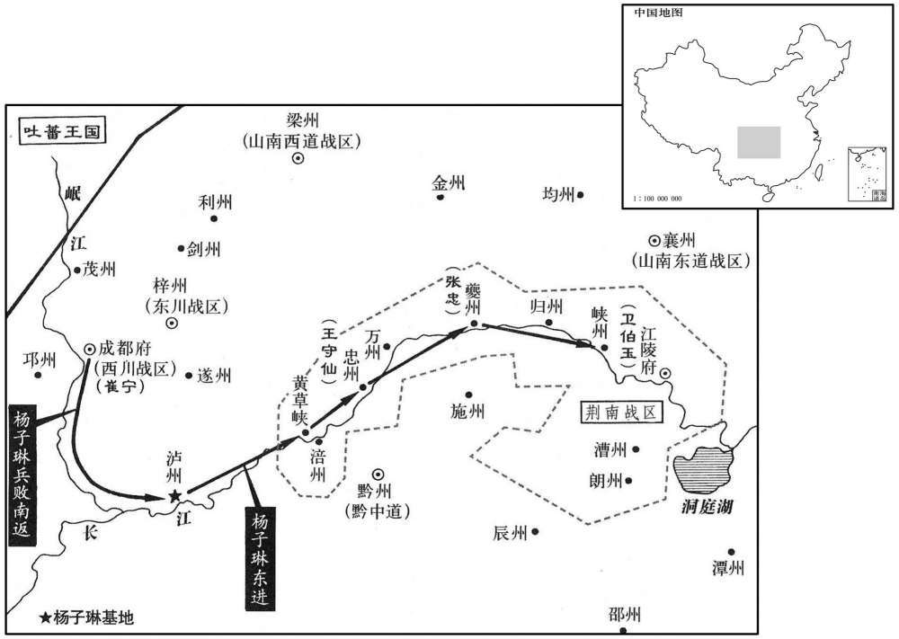

公元769年资治通鉴：本年记事、原文与白话对照
按原书编年位置阅读；追叙和史论不等于本年发生的事件。白话采用所据译本，缺译不以生成译文补齐。
卷224 · 本年记事
公元769年 · 唐代宗睿文孝武皇帝大历四年
四年〔（己酉、七六九）〕
上传原文的注释括号有异常，字符原样保留；无法可靠划分的段落默认全文显示。
本年事件索引（现代整理）

本年形势与背景参考图
春，正月，丙子，郭子仪入朝，鱼朝恩邀之游章敬寺。〔朝，直遥翻。鱼朝恩建章敬寺，自以为功，因子仪入朝，请游之以夸大其事。〕元载恐其相结，密子仪军吏告子仪曰：朝恩谋不利于公。」子仪不听。吏亦告诸将，将士请衷甲以从者三百人。〔杜预曰：衷甲，谓在衣中。从，才用翻；下同。〕子仪曰：「我，国之大臣，彼无天子之命，安敢害我！若受命而来，汝曹欲何为！」乃从家僮数人而往。朝恩迎之，惊其从者之约。子仪以所闻告，且曰：「恐烦公经营耳。」朝恩抚膺捧手流涕曰：「非公长者，能无疑乎！」〔长，知两翻。〕
春季，正月丙子（初七），郭子仪入朝，鱼朝恩邀请他去章敬寺游玩。元载害怕他们互相勾结，就秘密派郭子仪的军吏告诉郭子仪说：“鱼朝恩对你图谋不利。”郭子仪不听。军吏也告诉各位将领，将士们有三百人请求衣内穿甲跟从郭子仪前去。郭子仪说：“我是国家的大臣，他没有天子的命令，哪里敢暗害我！如果他受皇命而来，你们想干什么呢！”于是郭子仪带了几名家僮前往章敬寺。鱼朝恩迎接郭子仪，对他随从俭省感到惊奇。郭子仪将所听到的事告诉鱼朝恩，并且说：“害怕麻烦你张罗。”鱼朝恩抚胸拱手、痛哭流涕地说：“如果不是您这样的长者，能不怀疑我吗！”
壬午，流李岵于夷州。〔岵，侯古翻。流岵，直在令狐彰也。〕
壬午（十三日），代宗将李岵流放到夷州。
乙酉，郭子仪还河中。〔朝而还也。还，从宣翻，又如字。〕
乙酉（十六日），郭子仪返回河中。
辛卯，赐李岵死。
辛卯（二十二），代宗赐令李岵自尽。
二月，壬寅，以京兆之好畤、凤翔之麟游、普润隶神策军，〔畤，音止。〕从鱼朝恩之请也。
二月壬寅（初三），代宗听从鱼朝恩的请求，将京兆的好及凤翔的麟游、普润归属神策军管辖。
杨子琳即败还泸州，招聚亡命，得数千人，沿江东下，声言入朝；涪州守捉使王守仙伏兵黄草峡，〔泸，音卢。水经注：涪州之西有黄葛峡，山高险绝，无人居。意即此峡也。按杜甫诗有「黄草峡西船不归」之句，注云：黄草峡，在涪州之西。涪，音浮。〕子琳悉擒之，击守于忠州，守仙仅以身免。子琳遂杀夔州别驾张忠，据其城。荆南节度使卫伯玉欲结以为援，以夔州许之，〔使，疏吏翻。夔州，荆南巡属。〕为之请于朝。〔为，于伪翻。〕阳曲人刘昌裔〔旧志：前汉阳曲县，唐忻州定襄即其地也。后汉移阳曲县于太原界，乃于阳曲古城置定襄县。而太原之阳曲，隋开皇六年，改为阳直，十六年，又改为汾阳，恶阳曲之名也。武德七年，复改为阳曲县。〕说子琳遣使诣阙请罪，〔说，式芮翻。〕子琳从之。乙巳，以子琳为峡州团练使。〔峡州，夷陵郡。〕
杨子琳败归泸州后，招集逃亡的士兵，共得几千人，沿着长江东下，声称入朝。涪州守捉使王守仙在黄草峡埋伏兵马，被杨子琳全部抓获。杨子琳在忠州攻击王守仙，王守仙仅孤身逃脱。于是杨子琳杀掉夔州别驾张忠，占据夔州城。荆南节度使卫伯玉想结交杨子琳作为后援，将夔州许给了他，为他向朝廷请求。阳曲人刘昌裔劝说杨子琳派遣使者前往朝廷请罪，杨子琳听从了他的劝说。乙巳（初六），代宗任命杨子琳为峡州团练使。
初，仆固怀恩死，〔见上卷永泰元年。〕上怜其有功，置其女中宫中，养以为女。回纥请以为可敦，夏，五月，辛卯，册为崇徽公主，嫁回纥可汗。壬辰，遣兵部侍郎李涵送之，涵奏祠部郎中虞乡董晋为判官。〔虞乡，汉解县，后魏分置虞乡县。贞观十七年，省解县并入虞乡，二十年，复置解而省虞乡，天授二年，复分解县置乡县，属河中府。宋白曰：后魏太和九年，于今虞乡县西十三里置南解县，周明帝废南解，以虞乡县属绥化郡，今县西三十四里绥化故城是也。宝定四年，改绥化为虞乡县，周末，置解县于今虞乡城东，于解县西五十里别置虞乡县，今邑是也。〕六月，丁酉，公主辞行，至回纥牙帐。回纥来言曰：「唐约我为市马，即入，而归我贿不足，我于使人乎取之。」涵惧，不敢对，视晋，晋曰：「吾非无马而与尔为市，为尔赐不即多乎！尔之马岁至，吾数皮而归资，〔言不计其生死，皆偿马直也。〕边吏请致诘也。天子念尔有劳，故下诏禁侵犯。诸戎畏我大国之尔与也，莫敢校焉。尔之父子宁而畜马蕃者，畜，呼玉翻。蕃，音烦。〕非我谁使之！」于是其众皆环晋拜。〔环，音宦。〕即又相帅南面序拜，皆举两手曰：「不敢有意大国。」〔此晋吏韩愈状晋之辞，其言容有溢美。帅，读曰率。〕
当初，仆固怀恩病死，代宗怜悯他有功劳，将他女儿安置在皇宫中，收为养女。回纥可汗请让养女作他的可敦。夏季，五月辛卯（二十四日），代宗册封养女为崇徽公主，嫁给回纥可汗。壬辰（二十五日），派遣兵部侍郎李涵护送公主出嫁，李涵奏请祠部郎中虞乡人董晋担任判官。六月丁酉（初一），公主向代宗辞行后，到达回纥可汗的牙帐。回纥可汗让人传话说：“唐朝邀请我做买卖，我的马已经送到了唐朝，但付给我的钱财却不够，是否我应该派人去取呢？”李涵很害怕，不敢回答，他看了看董晋，董晋回答说：“我们不是没有马而同你们做交易，唐朝赏赐给你们的东西不是已经很多了吗！你们每年送来的马，我们仅数一下马皮，不考虑马的死活，即付给你们钱。边地官吏请求天子责问此事，天子考虑到你们有功劳，所以下诏禁止边地官吏侵犯你们的利益。各戎人害怕我大唐与你们友好，都不敢与你们较量。你们父子得到安宁，牲畜马匹繁育增长，不是我大唐，谁能使你们这样！”于是回纥可汗的部众都围着董晋，向他叩拜，后来他们又一起排列有序地向南面唐朝方向跪拜，都举起双手说：“我们不敢对大国另有企图。”
戊申，王缙表让副元帅、都统、行营使。〔【章：十二行本「使」下有「许之」二字；乙十一行本同；退斋校同。】〕
戊申（十二日），王缙上表代宗请求让出副元帅、都统、行营使职务。
辛酉，郭子仪自河中迁于邠州，其精兵皆自随，余兵使裨将之，分守河中、灵州。〔将，即亮翻。〕军士久家河中，颇不乐徙，〔乐，音洛。〕往往自邠逃归；行军司马严郢领留府，悉捕得，诛其渠帅，众心乃定。邠，卑旻翻。郢，以井翻。帅，所类翻。〕
两版字句有差异，建议核对原文。
辛酉（二十五日），郭子仪从河中迁往州，其精锐部队都随他行动，其余部队让副将率领，分别驻守河中、灵州。士兵们长期以河中为家，很不乐意移防他地，往往从州逃回河中。行军司马严郢主持河中留守军府事务，将他们全部抓获，杀掉为首的士兵，军心才得以稳定。
秋，九月，吐蕃寇灵州；丁丑，朔方留后常谦光击破之。
秋季，九月，吐蕃进犯灵州。丁丑（十二日），朔方留后常谦光将他们击败。
河东兵马使王无纵、张奉璋等恃功骄蹇，以王缙书生，易之，〔缙，音晋。以豉翻。〕多违约束。缙受诏发兵诣盐州防秋，〔盐州，汉五原郡地，隋置盐州，治五原县。今州南抵庆州马岭县北界，即汉马岭县地。〕遣无纵、奉璋将步骑三千赴之。奉璋逗遛不进，无纵托他事擅入太原城；缙悉擒斩之，并其党七人，诸将悍戾者殆尽，〔将，即亮翻。，又如字。骑，奇计翻。悍，侯旰翻。〕军府始安。
河东兵马使王无纵、张奉璋等人自恃有功，十分傲慢，认为王缙是一介书生，便轻视他，多次违反军规。王缙受诏调动部队到盐州去防御吐蕃，派遣王无纵、张奉璋率领三千名步骑兵前去。张奉璋停留不前，王无纵借口其他事擅自进入太原城，王缙将他们全部捉拿，并将他们和七名同伙杀掉，蛮横凶暴的将领几乎没有了，节度使军府方才安定。
冬，十月，常谦光奏吐蕃寇呜沙，首尾四十里。〔吐，从暾入声。呜沙县，属灵州，本汉富平县地。〕郭子仪遣兵马使浑瑊将锐兵五千救灵州，子仪自将进至庆州，闻吐蕃退，乃还。〔使，疏吏翻。将，即亮翻。瑊，古咸翻。还，从宣翻，又如字。吐，从暾入声。〕
冬季，十月，常谦光奏称吐蕃进犯鸣沙县，其军队前后达四十里长。郭子仪派遣兵马使浑率领五千精锐部队前去援救灵州，自己率军进到庆州，听到吐蕃退兵后，才返回。
黄门侍郎、同平章事杜鸿渐以疾辞位，壬申，许之；乙亥、薨。鸿渐病甚，令僧削发，遗令为塔以葬。〔令，力丁翻。遗令，力定翻。〕
黄门侍郎、同平章事杜鸿渐因病辞职，壬申（疑误），得到代宗的同意。乙亥（十一日），杜鸿渐去世。在杜鸿渐病重时，他命令和尚为他削发，留下遗嘱让他们造佛塔来埋葬他。
丙子，以左仆射裴冕同平章事。初，元载为新平尉，〔射，寅谢翻。新平，汉上郡之白土县，后汉献帝置新平郡，至于后魏，县名犹不改。西魏置豳州，隋开皇四年，改曰新平县，因郡以名县也。唐为邠州治所。宋白曰：新平，汉漆县地，汉建安中，分扶风置新平郡。姚苌之乱，屠废不立，后魏于今县西南置白土县，属新平郡；隋开皇四年，改白土县为新平县；唐武德以新平县为豳州治所。冕尝荐之，故载举以为相，亦利其老病易制。〔易，以豉翻。〕受命之际，蹈舞仆地，载趋而扶之，代为谢词。十二月，戊戍，冕薨。
两版字句有差异，建议核对原文。
丙子（十二日），代宗任命左仆射裴冕为同平章事。当初，元载任新平尉时，裴冕曾向朝廷推荐过他，所以，元载推举裴冕出任宰相，也因为裴冕年老多病，便于控制。裴冕接受任命、向代宗行蹈舞礼时，突然摔倒在地，元载匆忙上前扶住他，代他向代宗致谢词。十二月戊戌（初四），裴冕去世。